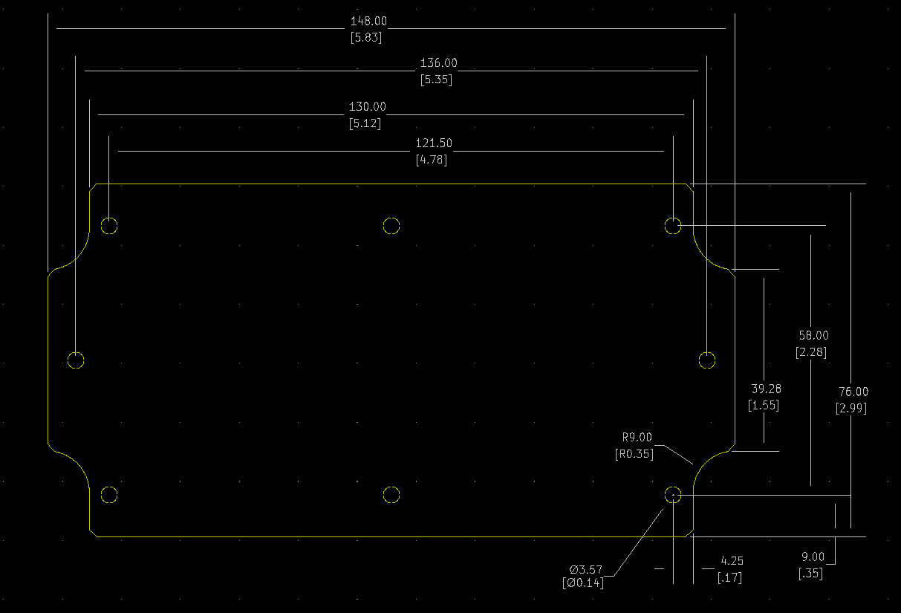

Project template containing the recommended board layout for Hammond Manufacturing 1555JF:
Gray: 1555JF42GY - HM394-ND
Gray: 1555JF17GY - HM393-ND
Gray: 1555J2F42GY - HM392-ND
Gray: 1555J2F17GY - HM391-ND
Features:
- Designed for harsh industrial environments or outdoor applications (security, outdoor wireless, controls etc. etc.)
- Ideally suited for mounting printed circuit boards, panels or DIN rail mounted components (see photo features for details).
- Designed for wall mounting. Interior is secure as lid screws are behind the lid. Can be made more secure if wall mounted with security screws (tamper resistant screws).
- Satin texture finish with smooth recessed surface on lid for a membrane keypad or label
- Standoffs molded in the interior of the lid & enclosure - designed for #4 x 1/4” self tapping screws (our part number 1555TS100)
- Choice of two materials:o General purpose ABS plastic (material carries a UL flammability rating of UL94 HB). Not recommended for outdoor use.o Polycarbonate (material carries a UL flammability rating of UL94 5VA @ 3mm) - Recommended for outdoor use.
- Color is a light gray (RAL 7035) to help keep heat absorption down.
- Gasketed lid with two piece “tongue & groove” construction provides protection against access of oil, dust and water.
- Gasket is one piece made from high temperature, U.L. listed silicone. Supplied loose inside the enclosure (not pre-installed).
- Designed to meet NEMA Type 4, 4X, 6, 6P, 12 & 13 ratings which meet and exceed IP ratings up to and including IP68.
- Polycarbonate version is UL 508A listed (File # E65324).
- Flanged lid is secured with self captivating M4 stainless steel machine screws (included), threaded into integral stainless steel bushings for repetitive assembly & disassembly
- Internal features are maximized for mounting options

|

|
The "Dwgs.User" layer contains all critical dimmensions in milimeters[inches].
The "Edge.Cuts" layer contains the maximum board outline and holes to align with board standoffs.
PCB Preview:
